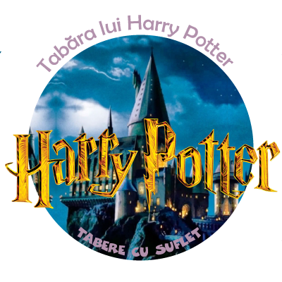

Iata cateva marturii de la copiii participanti in Tabara Harry Potter, stranse de Dna Profesoara Alina Zamfir si Camelia Savin.
The Canterbury Cathedral
On Sunday we were on a trip to Canterbury. It was a long way but after two hours we arrived. When we were in front of the Cathedral we saw a big gate that hides the old cathedral and we entered. Miss gave us some papers with some questions. We saw a movie about the Cathedral. We found out that the Cathedral was burnt and destroyed. We walked around and we saw a lot of painted windows, some graves. We entered into a crypt and answered a few questions then we ran out of time and went out. I wish we could stay more because it was interesting!
Valeria Manea
Arts and crafts
At Arts and Crafts we (the Romanian Group) drew a map of Europe. We had a lot of fun but it was very hard to draw. And we also found information about famous cities in Europe. We worked together and we finished it!
Bianca Grosu
Lessons
In St. mary teachers are good too, you can make your English better here. Teachers will show you lots of things and you’ll learn lots of new things too. You’ll have a lot to read and you can play games, in English, of course. St. Mary is a school for girls, but in the summer they allow boys, too. They have lots of activities, sports, movies and you can do karaoke, too.
Craciun Roxana
Teachers
Some of the teachers are very nice, including Fannie and Paul, but Lewis was horrible. He’s the mean teacher type, and he’s very strict. For example: if you yawn, he tells you that you’re not supposed to sleep in class. If you help somebody with a word, he will say that you’re not a teacher and you can’t help (that’s just mean!). Oh! And his lessons are boring. He teaches us about science, poetry and history, but not in a funny way. But if we skip these lessons, the others were cool and we had much fun.
SO IT WAS WORTH IT!
Teodora Manguta
Punting
At punting it was very interesting, beautiful and funny. I saw the colleges when I was in the boat. The guide told us about the history of Cambridge and colleges. It was raining and we had umbrellas. I saw lots of ducks from the boat. I took lots of photos.
Gheorghe Iuliana
Activities in school
Some activities in school were very interesting, but others weren’t so interesting. I think that karaoke was the best activity. The lessons were very funny and interesting. All the teachers were very good and I think I learned very much English, because we played many interactive games. I could have seen Kung Fu Panda, but it was Teodora’s birthday and I wanted to go to her party. At karaoke the people sang very very nice. My friend Tiberiu wanted to sing too, but time flew and he didn’t sing anymore.
The Harry Potter card game was a good activity too, almost all the activities in the school were very funny and I enjoyed them all.
Goodbye England, this camp was very funny!
George Baisan
St Mary’s school
St Mary’s School is a little school in Cambridge. It’s not as famous as King’s College, but I’m sure it’s a lot of fun. On the first day I thought it’s just a school, but it’s more than that. It’s a place where you can meet people from all around the world, even China. My favourite room is the Hall. The disco and karaoke nights took place there, but also the other events. The staff is really nice and funny, so you can be sure that you’ll have the best time ever. The classrooms are full of projects and interesting posters. Everywhere you go, you are surrounded by photos, paintings, posters and projects. It’s a nice school where nice people work! You should come!
Iulia Bucur
Cambridge town
Hi! I’m Tibi. I visited Cambridge. The thing that impressed me most was the impressive architecture. This and the very nice people. But I most liked the architecture. It was really amazing, all the houses and buildings were in the same colours, but, in different ways, they all looked like masterpieces. There we went punting and visiting the town, we went shopping and took a lot of photos. I went there with my friend Gigi and with Ionut, Teodora, Iuliana, Valeria, Bianca, Iulia, Roxana. We also wanted to see St John’s College, where Harry Potter was filmed, but it was closed.
Tiberiu Stoica